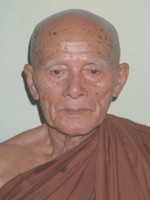

BuddhaSasana
Home Page
This document is written in Vietnamese, with Unicode
Times font
Hòa thượng Pháp Lạc
Tỳ khưu Thiện Minh
|
 Hòa Thượng Pháp Lạc thế danh Trần Công Khuê, sanh ngày 13 tháng 01 năm 1904 tại xã Bất Nhị, huyện Điện Bàn, tỉnh Quảng Nam trong gia đình có truyền thống Nho giáo. Ngài là trưởng nam, con của Ông Trần Văn Trác và Bà Phạm Thị Cải. Ngay từ thuở nhỏ, ngài đã được cha mẹ cho đi học chữ Nho lẫn chữ Quốc ngữ và chữ Pháp. Ngài là con trưởng trong gia đình có bảy anh em, cuộc sống ở nông thôn cũng nhiều cơ cực, cha mẹ lại gánh lo cho các con ăn học không xuể. Thế nên Ngài phải nghỉ học nữa chừng để đi làm việc, phụ cha mẹ lo cho các em ăn học nên người. Mặc dù nặng duyên nợ gia đình, nhưng ngài luôn luôn có ý muốn tìm một con đường chấm dứt khổ đau, sanh tử luân hồi. Ngài tầm sư học đạo qua nhiều tôn giáo khác nhau, nghe tin có vị thầy nào đạo cao đức trọng là tìm đến để học và chiêm nghiệm. Nhưng cuối cùng không có một tôn giáo và đạo sư nào thích hợp với tâm nguyện của ngài để xuất gia học đạo. Duyên lành đến, ngài tìm đến chùa Kỳ Viên, trụ sở của Giáo hội Tăng già Nguyên thủy Việt Nam để học kinh và nghe giảng pháp. Các bài giảng pháp của Hòa Thượng Bửu Chơn, Tăng Thống của Giáo hội đã giúp chuyển hóa đời sống tâm linh của ngài. Vào năm Kỷ Hợi (1959) , ngài quyết định cắt ái ly gia, đến xin làm Giới tử (Anagarika) tại chùa Giác Quang. Năm sau, Canh Tý (1960), ngài được Hòa Thượng Giác Quang cho xuất gia Sa Di và truyền dạy pháp môn thiền định để ngài chuyên cần tu niệm. Vào năm Tân Sửu , lúc 16 giờ, ngày 30 tháng 4 năm 1961, ngài thọ Đại giới với Hòa Thượng Bổn sư Phó Tăng Thống Thiện Luật và Thầy Yết ma Thượng Toạ Hộ Giác tại chùa Giác Quang. Thầy Bổn sư ban cho ngài pháp danh là Dhammosukhamakāmo (Pháp Lạc). Theo giới luật truyền thống của đức Phật, một vị xuất gia phải sống với thầy và Tăng chúng trong 5 năm để học pháp học lẫn pháp hành và giới luật Tỳ khưu. Vào năm Ất Tỵ (1965), Giáo Hội Tăng Già Nguyên Thủy Việt Nam đề cử ngài đến tỉnh Phan Thiết để thành lập chùa Bình Long và hướng dẫn chư Tăng Ni và Phật tử tu học. Thêm vào đó, ngài liên tục là kiểm soát viên của Ban Chưởng Quản Giáo Hội Tăng Già Nguyên Thủy Việt Nam. Năm Bính Ngọ (1966), Hòa Thượng Giới Nghiêm - Tăng Thống Giáo Hội Tăng Già Nguyên Thủy Việt Nam - đề cử ngài đến thành phố Mỹ Tho thành lập chùa Pháp Bảo. Nơi đây là một nơi hoang vắng, tha ma mộ địa, dân địa phương nghèo khó, vật chất khó khăn, thiếu thốn đủ thứ, thế mà ngài nhờ lòng tin Tam bảo, đức tính nhẫn nại, khiêm tốn và tinh tấn, đã hoàn thành sứ mạng cao cả của vị sứ giả Như Lai. Ngôi chùa Pháp Bảo được xây dựng và phát triển cho đến ngày hôm nay, và là nơi đào tạo nhiều Tăng Ni và Phật tử của Phật Giáo Nguyên Thủy. Trong năm 1976-1979, Ngài được đại hội suy tôn đảm nhiệm chức vụ Phó Tăng Thống Giáo Hội Tăng Già Nguyên Thủy Việt Nam. Năm Tân Dậu (1981) , khi Giáo Hội Phật Giáo Việt Nam được thành lập, ngài được thỉnh mời vào Ban Chứng Minh, tỉnh hội Phật Giáo Tiền Giang. Năm Đinh Sửu (1997), trong Đại Hội IV Giáo Hội Phật Giáo Việt Nam, Ngài được suy cử làm Thành viên Hội Đồng Chứng Minh, Trung Ương Giáo Hội. Năm Mậu Dần (1998), Hoà Thượng Hộ Nhẫn, Phó chủ tịch Hội Đồng Trị Sự Trung Ương GHPGVN, Tăng Trưởng Phật Giáo Nam Tông, thỉnh cử ngài vào chức vụ cố vấn Ban Trợ Lý Hệ Phái. Năm Canh Thìn (2000), dù tuổi cao sức yếu, ngài vẫn vận động xây dựng chùa Thái Bình (Bất Nhị) ở ngay tại quê hương của Ngài, với ý định để tế độ dòng họ theo Phật Pháp. Pháp danh của ngài được thầy Bổn sư ban cho lúc xuất gia đã gắn liền suốt cuộc đời hành đạo của ngài. Pháp Lạc là trạng thái tâm hạnh phúc và an tịnh. Thế nên mẫu người của ngài vui vẻ, hiền hòa và từ ái; chính nhờ những đức tánh này nên ngài thành tựu mỹ mãn những Phật sự vô vàn khó khăn mà Giáo Hội giao phó. Nơi nào Tăng chúng sống không có pháp Lục hoà, ngài đến hiện diện thì nơi đó tăng chúng sẽ sống an lạc và bình an. Đất lành chim đậu, ngài là một đại thụ, có nhiều bóng mát nên Thiện Nam và Tín Nữ đến xin quy y Tam bảo và xin xuất gia tu học với ngài rất đông, không đếm hết. Luật vô thường đã đến, số kiếp đã mãn, hạnh nguyện đã hoàn thành, Ngài đã ung dung ngàn thu an giấc vào lúc 5 giờ chiều, ngày 12 tháng 5 năm 2001 tại chùa Pháp Bảo, Mỹ Tho, hưởng thọ 98 tuổi, nhập 40 mùa an cư kiết hạ. (Bình Anson hiệu đính, 04-2005) -ooOoo- |
Last updated: 16-04-2005